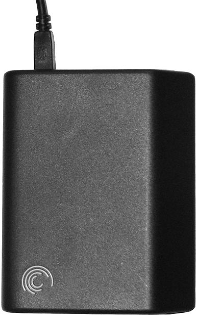
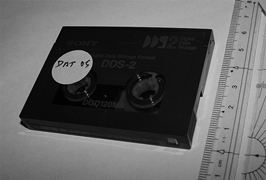
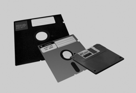

Còpies de seguretat
Les tècniques per assegurar la integritat de la informació en un sistema informàtic, com ara la redundància, la creació i el manteniment de particions i de sistemes de fitxers, no són suficients per si soles.
Quan un sistema informàtic conté informació crítica, convé crear còpies d’aquesta informació d’una manera regular.
- 
- Disc dur extern de 2,5 polzades amb interfície USB
En informàtica, les còpies de seguretat consisteixen en la creació de còpies addicionals de les dades importants del sistema informàtic.
Aquestes còpies de seguretat sovint també s’anomenen utilitzant el terme anglès backup, l’objectiu del qual és restaurar les dades copiades del sistema informàtic després d’un desastre, o bé restaurar un nombre determinat de fitxers en cas que s’hagin esborrat accidentalment o s’hagin corromput.
Els requeriments pel que fa als sistemes d’emmagatzematge per desar les còpies de seguretat poden ser molt importants, tot i que també va en funció de l’usuari i de les seves necessitats concretes. De totes maneres, actualment disposem de molts tipus diferents de sistemes d’emmagatzematge per a la creació de còpies de seguretat, com, per exemple, discos durs USB externs, cintes per a la creació de còpies de seguretat, mitjans òptics, etc.
Sistemes d'emmagatzematge com a base d'un sistema de còpies de seguretat
Per tal de dur a terme qualsevol còpia de seguretat, és imprescindible disposar d’algun sistema d’emmagatzematge extern al sistema informàtic que tindrà com a finalitat desar-hi les dades obtingudes durant el procés. Per planificar el procés de còpia de seguretat és un requisit important avaluar el cost, l’eficiència, la disponibilitat i l’adequació d’aquest sistema d’emmagatzematge.
Models de repositoris de dades
Per crear una còpia de seguretat és necessari pensar en termes de repositoris de dades. Aquests repositoris contenen les dades emmagatzemades i organitzades adientment. Aquesta organització pot ser una llista dels discos durs o de les cintes que fem servir per crear les còpies, o bé una base de dades informatitzada. Aquest concepte està molt relacionat amb l’esquema de rotació de còpies de seguretat.
Podem tenir diferents tipus de repositoris de dades per a la creació de còpies de seguretat:
- No estructurat: consisteix en un conjunt de mitjans per a la realització de còpies de seguretat sense cap organització lògica, com, per exemple, una pila de CD, DVD, o cintes de còpies de seguretat. És el mètode més fàcil d’implementar, però dificulta la recuperació de les dades.
- Complet i incremental: l’objectiu d’aquest esquema de còpies de seguretat consisteix a desar diverses còpies de les dades d’origen d’una manera més senzilla i fàcil de gestionar. Inicialment, es crea una còpia completa de tots els fitxers i, després, se’n poden fer còpies incrementals afegint només les dades que s’han canviat des de la còpia de seguretat anterior. En aquest cas, per dur a terme la restauració, caldria localitzar la còpia de seguretat completa i després les còpies de seguretat incrementals fetes fins al moment en què volem portar a terme aquesta restauració.
- Protecció de les dades d’una manera contínua: en comptes de crear còpies de seguretat periòdiques, el sistema registra tots els canvis que es fan en el sistema de fitxers. Això es fa desant les diferències a escala de bit o sectors de dades, en comptes de diferències a escala de fitxers. La diferència d’aquest esquema respecte a un sistema en mirall és que podem restaurar el sistema a un estat anterior a partir dels registres creats.
Mitjans d'emmagatzematge
Sigui quin sigui el model de repositori de dades que triem, és necessari utilitzar un mitjà físic per emmagatzemar les dades. Aquests mitjans poden ser:
- 
- Cinta emprada per a l'emmagatzematge de dades i per a la creació de còpies de seguretat.
- Cintes magnètiques: han estat el mitjà d’emmagatzematge més usat fins fa poc, perquè oferien unes capacitats molt grans amb relació al preu. Darrerament, això ja no és cert perquè els discos durs externs s’han abaratit molt. El format d’aquestes cintes magnètiques pot ser molt divers i sovint és específic, cosa que dificulta força la restauració de les dades si no es disposa del lector específic. Les cintes magnètiques són d’accés seqüencial i el temps d’accés és lent. De totes maneres, si fem operacions de lectura o d’escriptura d’una manera seqüencial o continuada, la velocitat pot ser prou ràpida, comparable a la dels discos durs.
- 
- Unitats de disquets de 8, 5,25 i 3,5 polzades
- Disquets: avui en dia gairebé en desús; eren populars durant la dècada de 1980 i el començament de la dècada de 1990. Tenien una capacitat molt limitada, per la qual cosa avui en dia són inútils.
- Discos durs: a causa de la baixada contínua de preus dels discos durs, s’han transformat en un mitjà d’emmagatzematge de dades molt competitiu. Tenen un temps d’accés baix, una capacitat cada vegada més gran i són fàcils de gestionar i utilitzar. Normalment, per crear còpies de seguretat en discos durs, en fem servir d’externs, que es connecten al sistema informàtic mitjançant la interfície SCSI, USB, FireWire, eS- ATA, o també Ethernet, iSCSI, o Fibre Channel, en cas que els discos durs siguin físicament més lluny del sistema informàtic.
- Discos òptics: podem fer servir CD o DVD (gravables o regravables) per crear còpies de seguretat. L’avantatge d’utilitzar aquests mitjans d’emmagatzematge és que es poden llegir en qualsevol ordinador que disposi del lector (avui en dia la pràctica totalitat). També podríem fer servir mitjans més nous com ara el blu-ray disc, però tot i que té una capacitat molt més gran que els DVD, el seu cost també és molt més alt i no surt gaire a compte.
- Emmagatzematge d’estat sòlid: inclouen les memòries flaix USB i també les targetes de memòria utilitzades en les càmeres digitals i altres dispositius (Compact Flash, Secure Digital, Memory Stick…). Aquests dispositius no són especialment barats, però són molt portables i fàcils d’utilitzar.
- Servei de còpies de seguretat remot: consisteix a utilitzar Internet per trametre la informació important del nostre sistema informàtic a un servidor de còpies de seguretat remot. Tot i que, evidentment, la velocitat serà molt més lenta que si ho fem en un mitjà d’emmagatzematge local, l’augment de velocitat d’accés a Internet ha popularitzat aquest mètode. Ofereix una protecció molt alta davant de desastres que podrien destruir sistemes d’emmagatzematge que fossin físicament propers al sistema informàtic, com, per exemple, en el cas de focs, terratrèmols, inundacions… Sovint, per assegurar la privacitat de les nostres dades, els proveïdors d’aquests serveis també faciliten eines d’encriptació.
Gestió del repositori de dades
Per tal d’implementar un sistema de còpies de seguretat, a més a més del model de repositori de dades o el sistema d’emmagatzematge per fer les còpies de seguretat, hem de tenir en compte la relació entre la fiabilitat, la seguretat, la facilitat d’accés i el cost, per mirar d’establir un equilibri entre aquests conceptes.
Els diferents mètodes de gestió de repositoris de dades no s’exclouen els uns als altres i, de fet, es poden combinar segons les necessitats. Per exemple, sovint es fa servir un disc dur per emmagatzemar les dades que posteriorment es passaran a una llibreria de cintes de còpies de seguretat.
Els sistemes de gestió del repositori de dades són:
- En línia (online): és el sistema d’emmagatzematge més fàcilment accessible. En aquest cas, podem iniciar els processos de restauració en temps molt petits (de l’ordre de mil·lisegons). Exemples en serien un disc dur intern o un RAID, possiblement connectat a un sistema d’emmagatzematge en xarxa. Aquests sistemes, tot i que són ràpids, tenen un cost més elevat, i les dades importants poden ser esborrades accidentalment o bé infectades per algun virus informàtic.
- Línia propera: típicament és més barat que l’emmagatzematge en línia, però és menys accessible. Tot i així, és útil com a mètode d’emmagatzematge per a còpies de seguretat. Un exemple sería una llibreria de cintes magnètiques. El procés per iniciar la restauració de la còpia de seguretat pot trigar de segons a minuts. Per portar a terme aquest procés ens cal un dispositiu mecànic que ens porti els dispositius d’emmagatzematge al lector corresponent en què les dades poden ser llegides o escrites. Aquest mètode de gestió del repositori es basa en mitjans d’emmagatzematge terciari.
- Fora de línia: en aquest cas, es requereix la intervenció humana per facilitar l’accés als mitjans d’emmagatzematge. El temps d’accés a aquests mitjans d’emmagatzematge pot ser des de segons fins a hores.
- Extern: per tal de protegir les dades contra desastres que puguin passar al lloc on hi ha el sistema informàtic, es poden portar els mitjans d’emmagatzematge on hem fet les còpies de seguretat a un altre lloc extern al sistema. Aquest lloc pot ser una oficina de l’administrador, o bé un edifici d’alta seguretat amb la temperatura controlada, pensat per oferir protecció contra desastres.
- Centre de recuperació de desastres: lloc on s’emmagatzemen les còpies de seguretat d’un sistema informàtic. De vegades, empreses o organitzacions lloguen aquests serveis a tercers per tal d’evitar pèrdues importants en el cas de desastres. També pot incloure la creació de miralls remots dels discos durs locals per tal que la informació continguda en aquests centres estigui tan actualitzada com sigui possible.
Selecció, extracció i manipulació de les dades
Abans de dur a terme el procés de còpia de seguretat, cal fer una planificació prèvia. Un dels aspectes més importants és decidir quina és la informació de la qual fem la còpia i quina metodologia seguim per fer-la.
Selecció i extracció de fitxers de dades
Decidir de què s’ha de fer una còpia de seguretat en un moment determinat és una feina que pot ser més difícil del que sembla inicialment. Si copiem massa dades redundants, el repositori de dades s’omplirà massa ràpid i, si copiem massa poques dades, ens podem arriscar a la pèrdua d’informació crítica. Vegem les diferents maneres de triar i gestionar les dades de les quals volem fer una còpia:
- Còpia de fitxers: és la manera més senzilla de fer una còpia de seguretat. Tot el programari de realització de còpies de seguretat en tots els sistemes operatius ofereix aquesta funcionalitat.
- Còpia parcial de fitxers: consisteix a copiar només els blocs de dades que han canviat en un període de temps determinat. Aquesta metodologia en estalvia una quantitat important d’espai d’emmagatzematge, però requereix un procés més llarg per tal de reconstruir la informació a l’hora de restaurar-la. Algunes de les implementacions necessiten integrar-se amb el sistema de fitxers sobre el qual es basen.
- Creació d’una imatge de tot el sistema de fitxers: en comptes de copiar un conjunt de fitxers dins d’un sistema de fitxers, podem fer una còpia de tot el sistema de fitxers sencer. Aquest mètode es coneix amb el nom de còpia de seguretat en cru del sistema de fitxers o creació d’imatges de discos o particions. Per tal de portar a terme aquest procés, el sistema de fitxers ha d’estar desmuntat. Normalment, s’arrenca des d’un CD autònom (live CD) i es fa servir un programari específic per crear la imatge del sistema. La imatge creada habitualment es desa en una altra partició o en un altre disc. Aquesta imatge, la podem fer servir posteriorment per tal de restaurar no tan sols les dades de l’usuari, sinó també el mateix sistema operatiu. Per tant, és útil tant per a pèrdues de dades de l’usuari, com per a errors greus del sistema operatiu. Aquest procediment també permet fer còpies de seguretat d’una manera més ràpida que altres mètodes tradicionals.
- Identificació dels canvis: alguns sistemes de fitxers desen un arxiu de bits per a cada fitxer que ha estat canviat recentment. Hi ha programari de còpies de seguretat que analitza la data de modificació del fitxer, el compara amb la darrera còpia de seguretat i determina si el fitxer s’ha canviat.
Selecció i extracció de dades en temps real
Si un sistema informàtic es fa servir mentre se’n fa una còpia de seguretat, pot passar que s’accedeixi a un fitxer determinat després d’haver-ne fet la còpia i que no representi fidelment el que l’usuari voldria. Això és especialment cert en el cas de les bases de dades de qualsevol tipus. En aquests casos, pot passar que la còpia de seguretat sembli correcta, però que no representi exactament l’estat de les dades en un punt determinat. En aquest cas, la còpia de seguretat seria inútil. Per resoldre aquests conflictes tenim diverses opcions:
- Instantània de còpia de seguretat: és una funcionalitat instantània d’alguns sistemes d’emmagatzematge que fa una còpia d’un sistema de fitxers com si aquest fos congelat en un moment determinat del temps. De totes maneres, quan s’ha completat la instantània, cal fer-ne una còpia de seguretat utilitzant mètodes normals, perquè la instantània per si sola no és gaire efectiva.
- Còpia de seguretat d’un fitxer obert: hi ha programari de còpies de seguretat que permet gestionar fitxers oberts mentre fan la seva funció. La manera més senzilla de fer-ho és comprovar si el fitxer està obert i, en aquest cas, ignorar aquest fitxer i tornar-ne a fer la comprovació posteriorment. Quan hem de considerar la realització de còpies de seguretat, hem de tenir en compte que els fitxers molt grans, com els de les bases de dades, poden patir modificacions mentre se’n fa la còpia. Per això, en aquest cas no és convenient fer una còpia de lectura de l’origen i escriptura de la destinació, sinó que hauríem d’aconseguir fer una còpia del fitxer en un moment determinat sense que tingui temps a modificar-se. Això pot ser molt complicat quan el fitxer del qual volem fer la còpia de seguretat es modifica constantment. Una opció seria, en l’exemple d’una base de dades molt gran, evitar que s’hi facin modificacions mentre es fa la còpia o mantenir la còpia instantània prou temps per fer-ne la còpia, de manera que es desin tots els canvis que s’hi han fet posteriorment i s’apliquin després d’haver-ne fet la còpia.
- Còpia de seguretat d’una base de dades en fred: durant la còpia de seguretat en fred d’una base de dades, aquesta no està disponible per als usuaris i les dades no canvien durant el procés de còpia, de manera que no hi ha problemes de consistència quan es torna a un funcionament normal.
- Còpia de seguretat d’una base de dades en calent: alguns sistemes gestors de bases de dades ofereixen mètodes per a generar una imatge per a la creació d’una còpia de seguretat, la qual cosa en permet l’accés i l’ús (còpia en calent). Per fer-ho cal una imatge inconsistent, més un registre de tots els canvis que s’hi han fet mentre es feia el procediment de còpia. Quan es produeix la restauració, s’hi apliquen els canvis desats en el fitxer de registre per tal que la base de dades estigui actualitzada.
Selecció i extracció de metadades
No tota la informació desada en un sistema informàtic ho és en forma de fitxers. Per tal de recuperar un sistema complet des de zero, és necessari tenir accés a aquest tipus d’informació, anomenada metadades. Vegem els diferents tipus de metadades que se solen presentar en un sistema informàtic:
- Descripció del sistema: és necessari tenir totes les especificacions del sistema per obtenir-ne un reemplaçament exacte després d’un desastre que destrueixi el sistema informàtic totalment o parcialment.
- Sector d’arrencada: és necessari per poder iniciar la càrrega del sistema operatiu, tot i que no és un fitxer normal. Sovint és més fàcil tornar- lo a crear que desar-lo sencer i recuperar-lo posteriorment.
- Esquema de particions: per tal de poder recrear el disc original, és necessari tenir la forma com estava organitzat el disc mitjançant les particions i la configuració del sistema de fitxers.
- Metadades de fitxers: per tal de restaurar l’entorn de treball original d’un usuari, també cal fer una còpia de seguretat dels permisos sobre els fitxers, les ACL, els propietaris i els grups als quals pertanyen els fitxers i altres metadades.
- Metadades del sistema: els diferents sistemes operatius tenen diferents maneres de desar la configuració del sistema. En el cas de Windows, es desa aquesta informació en el registre del sistema, que és més difícil de restaurar que un fitxer normal.
Cal dir que hi ha programari específic que permet la creació de la imatge de tot un disc dur; fent això, totes les metadades que hem enumerat en aquest mateix apartat queden desades dins d’aquesta imatge.
Manipulació de les dades i optimització de la seva gestió
Per tal d’optimitzar el procés de creació de còpies de seguretat i augmentar-ne tant la velocitat, la seguretat i la utilització dels mitjans d’emmagatzematge, hem de manipular d’alguna manera les dades amb què treballem. Per fer-ho podem emprar diferents tècniques:
- Compressió: podem fer servir diferents esquemes per reduir l’espai que ocupen les dades en els mitjans d’emmagatzematge en què creem les còpies de seguretat. Sovint el mateix programari de creació de còpies de seguretat ens ofereix la possibilitat de fer aquesta compressió utilitzant algorismes i formats estàndards com ara zip, 7z, rar… De vegades, però, és el mateix maquinari que serveix per fer les còpies de seguretat qui la implementa, com, per exemple, en el cas d’alguns dispositius de cinta.
- Eliminació de les duplicacions: quan hem de fer còpies de seguretat de sistemes semblants, de vegades hi ha el risc potencial de tenir redundància excessiva en les dades desades. Per exemple, si volem fer una còpia de seguretat d’un conjunt d’estacions de treball amb el mateix sistema operatiu, segurament hi haurà un conjunt de fitxers que serà el mateix en tots els casos. El repositori de dades en què guardem la còpia de seguretat només cal que desi aquests fitxers un sol cop. Aquesta tècnica es pot aplicar a escala de fitxer o fins i tot a escala de blocs de dades, la qual cosa redueix dràsticament l’espai necessari. Aquest procés d’eliminació de les duplicacions de dades, idealment l’ha de resoldre un ordinador abans d’enviar la informació al mitjà d’emmagatzematge utilitzat per a la creació de les còpies de seguretat. Si el procés de còpia de seguretat es fa utilitzant una xarxa, això també redueix molt l’amplada de banda necessària per enviar les dades al lloc on fem la còpia de seguretat.
- Duplicació: de vegades, les còpies de seguretat es dupliquen en un segon mitjà d’emmagatzematge per tal d’augmentar-ne encara més la seguretat davant d’una pèrdua d’informació eventual.
- Encriptació: els mitjans d’emmagatzematge d’alta capacitat presenten un risc important en cas que es perdin o siguin robats, perquè la informació pot anar a parar a mans no desitjades. Per tal d’evitar aquests problemes podem procedir a l’encriptació de les dades. Tot i així, l’encriptació té algun inconvenient, ja que és un procés que ocupa molt intensivament la utilització del processador i pot reduir la velocitat de creació de còpies de seguretat. A més a més, un cop les dades estan encriptades, és més difícil comprimir-les. Per això, sovint es fa el procés invers: de primer, es comprimeix la informació que volem desar i, després, s’encripta. És important remarcar que, si la política de gestió de claus d’encriptació no és efectiva, tot el procés d’encriptació no serà efectiu.
- Multiplexació: quan hi ha molts ordinadors dels quals hem de fer una còpia de seguretat i el nombre de mitjans d’emmagatzematge per fer-ne la còpia és inferior, podem utilitzar un sol mitjà d’emmagatzematge per desar diverses còpies de seguretat de manera simultània. Això és la multiplexació.
- Refactorització: el procés de reorganització dels conjunts de còpies de seguretat en un repositori es coneix amb el nom de refactorització. Si, per exemple, un sistema de còpies de seguretat utilitza una sola cinta diàriament per desar les còpies de seguretat incrementals per a tots els ordinadors protegits, restaurar un d’aquests ordinadors podria requerir una gran quantitat de cintes. La refactorització podria, en aquest cas, consolidar les còpies de seguretat d’un sol ordinador en una sola cinta. Això és molt útil per a sistemes que fan còpies de seguretat incrementals d’una manera contínua.
- Creació i gestió de fases del procés de còpia: de vegades les còpies de seguretat s’envien en una fase inicial a un disc dur convencional abans de copiar-les en una cinta. Aquest procés el podríem anomenar DADAC (disc a disc a cinta). Aquesta tècnica pot ser útil quan la velocitat a la qual el sistema al final de la cadena pot rebre dades és lenta, ja que sovint l’origen d’aquestes dades les pot enviar més ràpidament. També serveix per crear una centralització per a la implantació d’altres tècniques de manipulació de dades.
Gestió del procés de creació de còpies de seguretat
La creació d’una còpia de seguretat és un procés; per tant, a mesura que les dades de les quals hem fet una còpia de seguretat es modifiquen, cal actualitzar aquestes còpies. Tots els tipus d’usuaris, tant en l’àmbit domèstic com en l’àmbit empresarial, necessiten protegir les seves dades, malgrat la freqüència i la magnitud de les còpies de seguretat és diferent. Tot i així, comparteixen les mateixes limitacions i els mateixos objectius. Per tant, sigui qui sigui el que faci les còpies de seguretat, necessiten tenir la certesa que el procés s’ha completat correctament.
Incidents relacionats amb les còpies de seguretat
- El 1996, en un incendi a la seu central del banc Credit Lyonnais, a París, els administradors de sistemes van entrar a l’edifici en flames per rescatar les cintes en què hi havia les còpies de seguretat, perquè no tenien còpies fora de l’edifici. Molts arxius i dades es van perdre.
- El Banc d’Amèrica, Time Warner, Citigroup i d’altres organitzacions han patit robatoris o pèrdues de cintes amb còpies de seguretat durant els anys 2005 i 2006.
- El 3 de gener del 2008 un servidor de correu d’una companyia de telecomunicacions nòrdica va fallar i es va descobrir que la darrera còpia de seguretat s’havia fet el 15 de desembre anterior. Més de 3.000 usuaris es van veure afectats.
Objectius de les còpies de seguretat
Els objectius de la creació de les còpies de seguretat són els següents:
- Recuperació d’un determinat punt temporal: consisteix a recuperar les dades en un moment determinat del temps en el qual s’ha creat la còpia. Per tant, és com si tiréssim enrere en el temps, just en el moment anterior a la pèrdua de dades. Com més recent sigui el moment del temps al qual vulguem tirar enrere quan es produeixi una pèrdua de dades, més gran haurà de ser la freqüència de les còpies de seguretat.
- Seguretat de les dades: a més a més de preservar les dades dels usuaris del sistema informàtic, també les hem de protegir d’accessos no autoritzats d’altres persones. Les còpies de seguretat s’han de portar a terme de manera que, en cas que els fitxers originals tinguin assignats uns permisos determinats, es mantinguin. Això es pot fer mitjançant l’encriptació i utilitzant una política adequada per a la manipulació dels suports físics en què hem fet la còpia de seguretat.
Limitacions
A l’hora de fer les còpies de seguretat, hem de tenir en compte tot un seguit de limitacions:
- Finestra de còpies de seguretat: són els períodes de temps en els quals es fa la còpia de seguretat. Habitualment les còpies de seguretat es fan en el moment en què el sistema té una utilització més baixa, de manera que el procés de còpia interfereixi mínimament en el funcionament normal del sistema. Les còpies de seguretat s’han de planificar de manera que els usuaris del sistema no en quedin gaire afectats. Si la duració de la creació de la còpia de seguretat es prolonga massa temps cal decidir si cal aturar el procés o deixar que acabi.
- Impacte en el rendiment: qualsevol procés de creació d’una còpia de seguretat té un impacte en el sistema del qual creem aquesta còpia, perquè mentre duri el disc dur del sistema estarà ocupat fent operacions de lectura de les dades que volem desar.
- Cost del maquinari, programari i feina: tots els mitjans d’emmagatzematge tenen una capacitat limitada i tenen un cost determinat. Cal intentar preveure la capacitat d’emmagatzematge que necessitarem per portar a terme el nostre esquema de creació de còpies de seguretat. També cal tenir en compte el cost del programari específic per fer còpies de seguretat, en cas que aquest sigui de pagament.
- Amplada de banda de xarxa: els sistemes de còpia de seguretat distribuïts utilitzen diferents ordinadors, discos durs, NAS o altres elements que requereixen una xarxa per comunicar-se entre ells. Per tant, quan es crea la còpia de seguretat, això pot implicar una utilització intensiva de la xarxa, de manera que en redueixi el rendiment per a altres usos.
Implementació
Assolir els objectius definits per a la creació de les còpies de seguretat, tenint en compte les possibles limitacions, de vegades és una tasca força difícil. Tot i així, hi ha un seguit d’eines i de polítiques que ens poden ajudar a aconseguir aquest assoliment d’objectius:
- Planificació: utilitzant un planificador de tasques, es pot millorar molt la fiabilitat i la consistència de les còpies de seguretat, ja que s’elimina la possibilitat d’error que pot introduir una persona. Gairebé tot el programari de creació de còpies de seguretat implementa aquesta funcionalitat.
- Autenticació: cal que els usuaris que fan les còpies de seguretat s’autentiquin en algun moment del procés de creació de còpies de seguretat per evitar que persones no autoritzades tinguin accés a informació que ha de ser protegida d’accessos indeguts.
- Cadena de confiança: sovint les còpies de seguretat es fan en suports físics que es poden transportar i, per tant, només hi han de tenir accés persones o empreses de confiança, per tal de protegir la seguretat de les dades copiades.
Mesura i monitoratge del procés
Per tal d’assegurar-se que l’esquema de còpies de seguretat funciona correctament, necessitem monitorar aspectes claus del procés i desar un historial d’aquest procés. Hem de tenir en compte els factors següents:
- Validació de les còpies de seguretat: és el procés mitjançant el qual po- dem saber com s’ha portat a terme la còpia de seguretat de les dades. Aquest procés és el mateix que es portaria a terme per validar altres processos dins de la mateixa empresa o en altres empreses. Com que les empreses cada vegada tenen més dependència de la creació de còpies de seguretat per tal d’assegurar-ne la continuïtat, encarreguen a entitats externes que verifiquin la viabilitat i l’eficiència dels seus processos de còpies de seguretat.
- Creació d’informes: a més a més de la creació d’historials generats per l’ordinador, els registres d’activitat i de canvis són útils per monitorar la creació de còpies de seguretat.
- Validació: sovint, molts programes de creació de còpies de seguretat fan servir checksums o hashes, és a dir, operacions basades en suma de bits a partir de les dades desades en les còpies de seguretat per assegurar-se la integritat i la correcció de les dades guardades. Això ofereix diversos avantatges; de primer, en podem verificar la integritat sense haver de restaurar l’arxiu original (només cal el que hem creat amb la còpia), perquè la suma de bits (checksum) es calcula a partir del fitxer original. A més a més, alguns programes de creació de còpies de seguretat poden fer servir sumes de bits per tal d’evitar còpies redundants de fitxers i millorar la velocitat de còpia. Això és fonamental en el procés de desduplicació (eliminació de còpies redundants).
Altres consideracions
Les còpies de seguretat i els sistemes de còpies de seguretat es poden confondre amb sistemes amb tolerància a errors i arxius històrics de dades.
Les còpies de seguretat es diferencien dels arxius històrics de dades en el fet que els primers són còpies secundàries i, en canvi, els arxius històrics es poden reutilitzar en un futur. Els sistemes de còpies de seguretat es diferencien dels sistemes tolerants a errors en el fet que els primers assumeixen que en algun moment es produirà un error i, en el cas dels segons, assumeixen que no se’n produirà cap.
A més a més d’això, hauríem de tenir en compte alguns consells:
- Com més important siguin les dades que emmagatzemem en un ordinador, més gran és la necessitat de crear-ne còpies de seguretat.
- Un sistema de còpies de seguretat només és útil si tenim una estratègia de restauració de les dades planificada prèviament.
- No és aconsellable desar les còpies de seguretat físicament a prop del sistema del quan hem fet la còpia, perquè en el cas d’algun desastre com ara foc, inundacions o alteracions del corrent elèctric, es podrien provocar danys en les còpies de seguretat.
- Cal automatitzar la creació de còpies de seguretat, perquè les còpies manuals són subjectes a error.
- Cal mirar d’emmagatzemar les dades copiades en formats estàndard o oberts per contribuir al procés de recuperació, en cas que el programari de creació de còpies de seguretat quedi obsolet.
- Les còpies de seguretat de vegades fallen i, per tant, cal una estratègia de monitoratge i de validació per tal d’assegurar-nos que les còpies fetes són correctes.